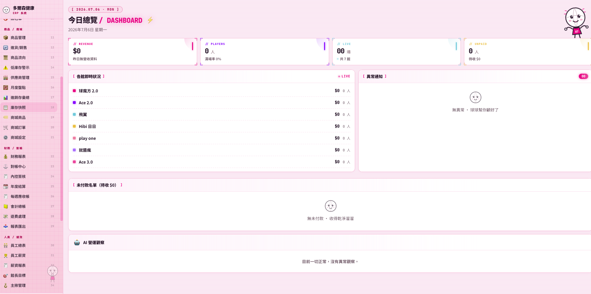
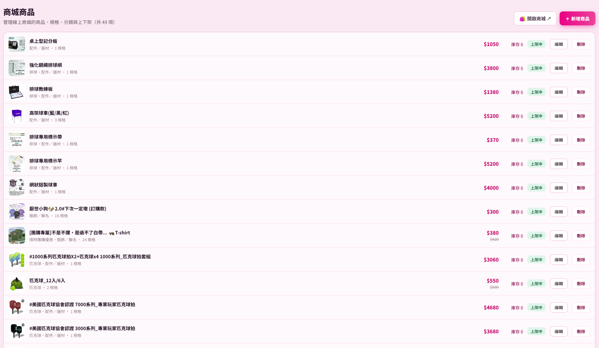
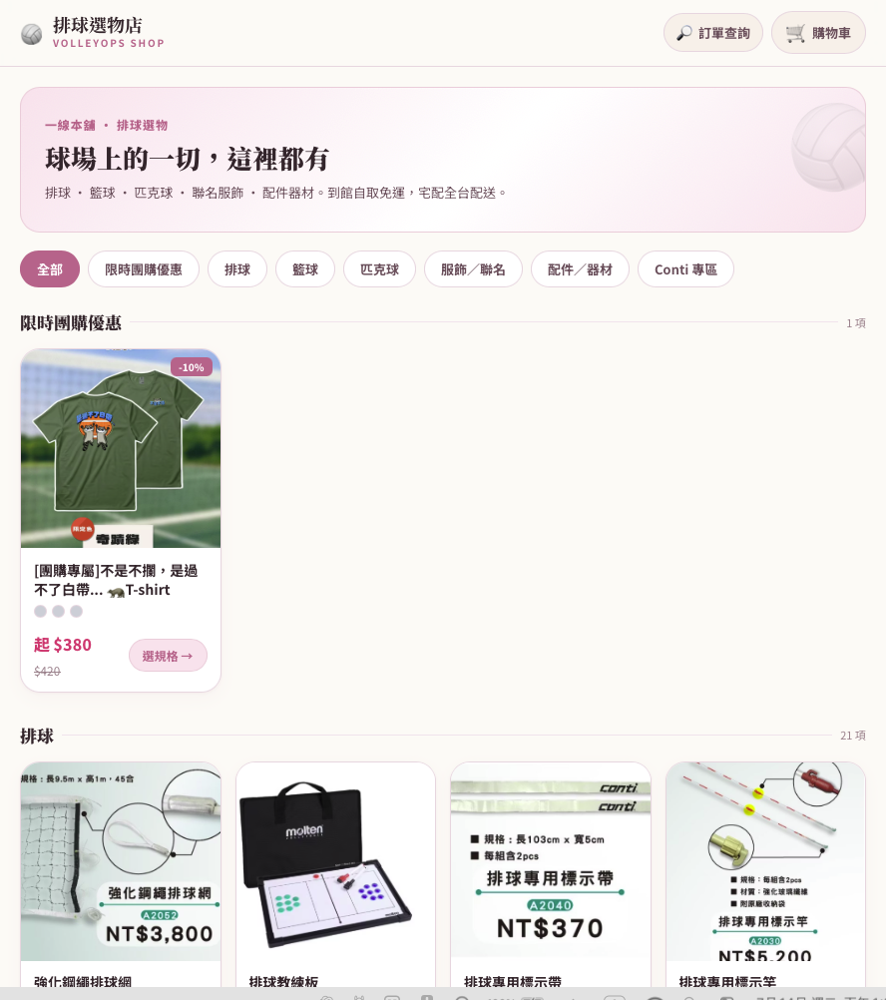

01 — 專案背景
市面上找不到的系統，就自己打造一套
這家企業旗下經營多個球館，隨著據點與業務擴張，營運工具也越疊越多：報名用一套、收款用一套、周邊商品又是另一套，帳務則靠 Excel 與人工串接。市面上有 ERP、有 POS、有報名系統，但沒有任何一套是針對「多球館企業」的整合方案。
這個專案的目標很明確：打造一套專屬的 ERP，讓報名、收款報到、商城、進銷存、入帳對帳與會計全部跑在同一套資料核心上，讓多館營運從「四散的工具」收斂成「一個系統」。
專案核心：不是把現成系統拼起來，而是從資料模型開始設計一套真正符合多球館營運邏輯的 ERP——每一筆報名、每一筆收款、每一件商品，最終都要能對得上帳。
02 — 問題與痛點
工具越多，資料越散，對帳越痛
痛點 1報名、收款、商城、帳務各用一套工具，同一筆交易的資料散落在不同系統，需要人工重複輸入與比對。
痛點 2月底對帳全靠人工：把各館、各系統的金流撈出來逐筆核對，耗時數天且容易出錯。
痛點 3管理層無法即時掌握各館營運全貌——報名數、銷售額、庫存狀況分散各處，決策只能靠事後彙整的報表。
03 — 解法與系統架構
一套資料核心，串起營運的每一個環節
系統以共用資料核心為中心設計：會員、課程、訂單、商品、金流全部收斂在同一套資料模型上。前台涵蓋課程報名、收款報到與周邊商品商城；後台則是進銷存、入帳對帳與會計模組。
因為所有模組共用同一套資料，一筆報名產生的收款會自動流進對帳與會計流程，一筆商品銷售會即時反映在庫存——資料只輸入一次，全系統同步。



ERP System進銷存管理金流 / 入帳對帳會計模組周邊商品商城Database DesignSystem Integration
04 — 我的負責範圍
從需求訪談到系統上線，一人全程負責
- 1深入訪談營運與帳務人員，梳理多球館的實際營運流程與對帳邏輯
- 2設計整體資料模型與系統架構——會員、課程、訂單、商品、金流的關聯設計
- 3開發前台功能：課程報名、收款報到、周邊商品商城
- 4開發後台功能：進銷存管理、入帳對帳、會計模組
- 5規劃權限與多館別資料隔離，各館看各館、總部看全局
- 6系統測試、上線部署與操作教學，並持續依營運回饋迭代
05 — 實作重點與難點
讓「整合」不只是口號的三個關鍵
實作重點資料模型先行：整合系統最難的不是功能，而是資料。先把會員、訂單、金流、庫存的關聯設計對，後面每個模組才能自然接上，不會做到一半打掉重練。
實作重點對帳自動化：報名收款、商城銷售的每一筆金流都帶著來源與狀態進系統，入帳對帳從「人工逐筆核對」變成「系統比對、例外才需人工」。
實作重點多館別架構：系統從第一天就以多館別設計——館別是資料的一級維度，新增據點不需要改架構，權限與報表也隨館別自動切分。
06 — 專案成果 / 價值
從四散的工具，到一個營運中樞
系統成果
系統上線後，報名、收款、商城、進銷存與帳務全部收斂在同一套系統裡。營運端可即時掌握各館報名與銷售狀況，帳務端的對帳工作由人工天級縮短為系統即時完成，資料重複輸入與人為錯誤大幅下降。
後續延伸：模組化架構讓系統能隨企業成長持續擴充——新增館別、新增課程類型、串接更多金流或報表需求，都能在現有架構上直接擴充，不需重新打造。